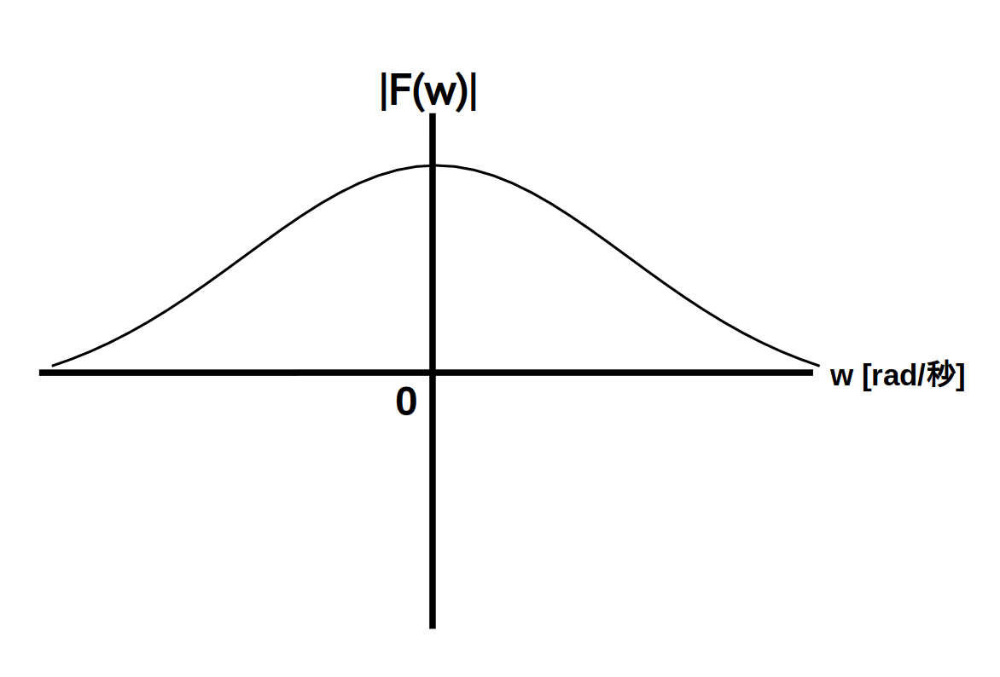
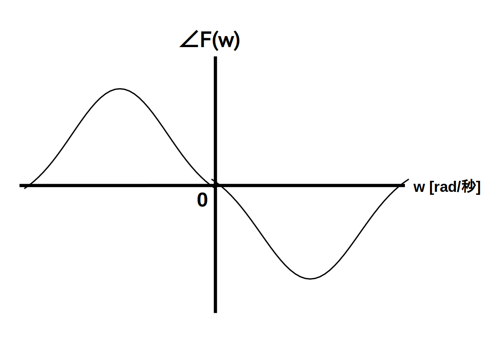

スペクトル $\textrm{F}(w)$ のグラフのことを「スペクトル図」と呼びます。
スペクトル $\textrm{F}(w)$ は複素関数なので、普通にスペクトル図を描くと角周波数軸、実軸、虚軸の3つの軸を持つ3次元グラフになります。
ただし3次元グラフは分かりにくいので、通常は振幅スペクトル(又はパワースペクトル)図と位相スペクトル図の2つのグラフに分けます。
ここで振幅スペクトル図は、横軸を角周波数 $w$ [rad/秒]、縦軸を振幅スペクトル $|\textrm{F}(w)|$ とするグラフです。
例を図1に示します。

同様に位相スペクトル図は、横軸を角周波数 $w$ [rad/秒]、縦軸を位相スペクトル $\angle\textrm{F}(w)$ とするグラフです。
例を図2に示します。

パワースペクトル図は振幅スペクトル図を縦方向に自乗するだけなので省略します。